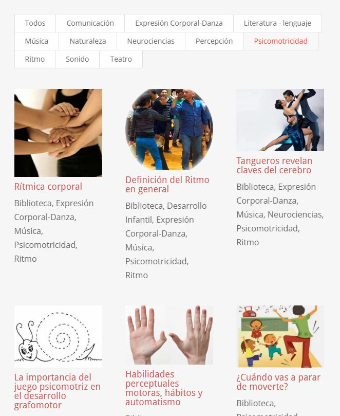

MANOS CANTORAS
MANOS CANTORAS
TUTORÍAS Y CERTIFICACIÓN
Si tienes interés de completar el proceso de aprendizaje propuesto en este curso,
recibiendo tutorías y realizando diversos trabajos prácticos, puedes aprovechar el aula virtual
especialmente diseñada para ello.
Una vez que hayas cumplido con la participación requerida, se te extenderá un certificado de aprobación.
Es importante tener en cuenta que el servicio de tutoría te lo ofrecemos sin costo
adicional. Por lo que puedes decidir tomar esta opción cuando mejor te convenga o no tomarla
El curso es el mismo
lo único que se agrega es el trabajo en el aula virtual, las devoluciones de los tutores y otras experiencias que podrás apreciar de tus compañeros de grupo
¿Cuándo puedes ingresar al aula?
Los cursos en el aula virtual tienen fecha de inicio y finalización.
Es importante tener en cuenta
• que el tiempo disponible para la cursada es de cuatro semanas
• que el tiempo de dedicación lo puedes manejar como mejor te convenga. No hay horarios fijos para las
actividades. Puedes itilizar el aula las 24 horas del día
• que para que te tengamos en cuenta y te guardemos un lugar, debes completar el formulario de inscripción
por lo menos 15 días antes de la fecha de inicio + ir al
formulario
¿Cuáles son las fechas de inicio?
para revisar el calendario de actividades de Arte y Parte puedes ingresar a la agenda publicada en nuestra página web + ver agenda
Reglamento de aulas virtuales
... Para saber cómo nos manejamos entre profesores y alumnos, los derechos y obligaciones, etc. te ofrecemos revisar el siguiente documento + ver reglamento
Preguntas frecuentes
... Para saber cuáles son los requerimientos técnicos para participar en las aulas virtuales de AYP y otras preguntas frecuentes + ver FAQ
|
 |
|